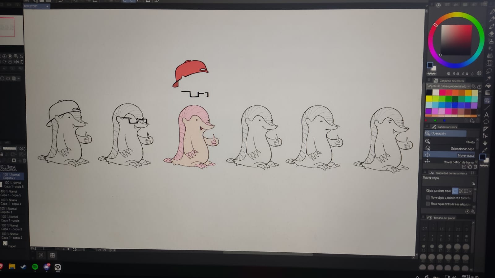

Apuntes, foros, proyectos, arte y marketplace para los estudiantes de la FACE UBB, en una sola plataforma.
El problema
Los estudiantes de la FACE gestionan sus necesidades a través de canales informales dispersos. Nada queda, nada se encuentra.
Los archivos en WhatsApp expiran y se pierden en Discord.
Las mismas preguntas aparecen cada semestre porque nadie encuentra las respuestas anteriores.
El CEE publica en múltiples canales. No todos ven todo.
El talento de otras carreras queda invisible.
Los artistas compiten con memes y publicidad sin herramientas especializadas.
Ventas abiertas al público general, sin verificación universitaria.
La solución
Cada módulo resuelve uno de los problemas identificados en los procesos actuales de la FACE.
Centraliza materiales por carrera y ramo. Búsqueda semántica incluida.
Por carreraDiscusiones organizadas por asignatura, con votación de respuestas.
Por carreraSolo el CEE y tutores pueden publicar. Información oficial y segmentada.
Por carreraRecomienda perfiles compatibles según habilidades e intereses.
UniversalReproductor de audio, galería de imágenes, obras por capítulos.
UniversalCompra y vende entre estudiantes verificados con correo institucional.
UniversalIdentidad del proyecto
Estamos trabajando en el diseño de la mascota oficial de InFACE. Aún no tiene nombre, pero ya tiene personalidad.

Distintas poses, accesorios y estilos hasta encontrar el diseño que represente a la comunidad.
La paleta de colores de la mascota será coherente con la identidad de InFACE.
Todavía no tiene nombre oficial. Eso también forma parte del proceso en curso.
Perfiles
Un perfil que une tus facetas académica, artística, emprendedora y comercial.
Ing. Ejecución Computación · 3er año
Registro solo con @alumnos.ubiobio.cl.
Estudiante, Tutor, CEE o Superadmin.
Para que el match de proyectos te encuentre.
La mascota oficial será el avatar predeterminado de todos los estudiantes.
Inteligencia artificial
No como complemento, sino parte central de la arquitectura desde el primer día.
Encuentra contenido describiendo lo que necesitas, no solo palabras exactas.
Encuentra apuntes y respuestas por significado.
Detecta y filtra contenido inapropiado en tiempo real.
Sugiere compañeros según habilidades del perfil.
Detecta nombres ofensivos al momento del registro.
Acceso
Diseñado exclusivamente para la comunidad FACE. Sin registros públicos.
Solo cuentas @alumnos.ubiobio.cl. Tu identidad es verificada desde el primer momento.
Un solo perfil que une tus facetas académica, artística, emprendedora y comercial.
Repositorio, foro, marketplace y módulo cultural desde una sola interfaz.
El match conecta estudiantes de las 5 carreras sin depender del azar.
Cronograma
El equipo
Estudiantes de IECI que conocen el problema de primera mano, porque lo vivimos.
Ing. Ejecución Computación e Informática · FACE UBB
valentina.martinez2302@alumnos.ubiobio.clIng. Ejecución Computación e Informática · FACE UBB
silvana.araya2301@alumnos.ubiobio.clProfesora Guía · Departamento de Sistemas de Información · FACE UBB
asegura@ubiobio.clRepositorio, foros, anuncios, proyectos, arte y marketplace. Integrados, verificados, para ti.